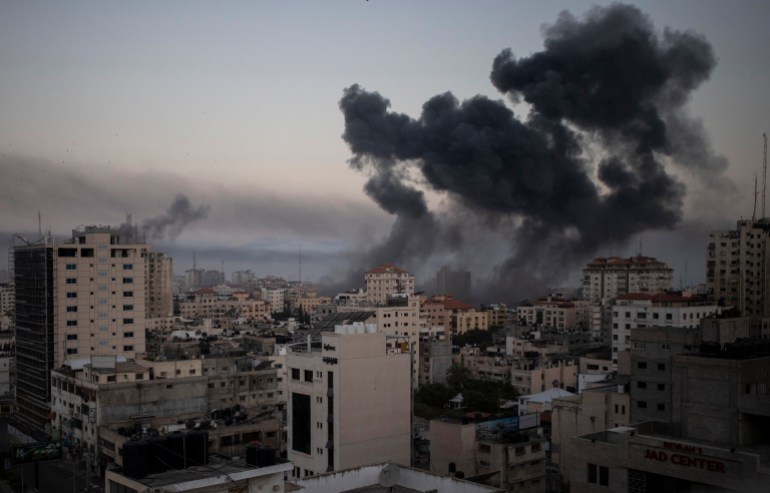
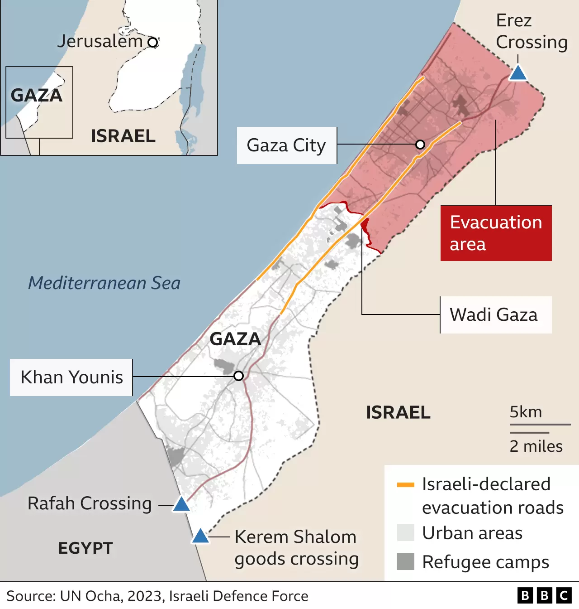

Could an Israeli ground invasion of Gaza meet its aims?

Israel's leaders have declared that Hamas will be wiped off the face of the Earth and Gaza will never go back to what it was.
- "Every Hamas member is a dead man," Prime Minister Benjamin Netanyahu said after fighters from the militant group killed 1,300 people in a brutal attack on Israel.
- The goal of Operation Swords of Iron appears far more ambitious than anything the military has planned in Gaza before. But is that a realistic military mission, and how can its commanders possibly fulfil it?
- A ground invasion of the Gaza Strip involves house-to-house urban fighting and carries immense risks to the civilian population. Air strikes have already claimed hundreds of lives, and more than 400,000 people have fled their homes.
- Herzi Halevi, chief of staff of the Israel Defense Forces (IDF), has vowed to "dismantle" Hamas, and has singled out its political head in Gaza. But is there an ultimate vision for how Gaza will look after 16 years of Hamas's violent rule?
- "I don't think Israel can dismantle every Hamas member, because it's an idea of extremist Islam," says military analyst Amir Bar Shalom of Israel's Army Radio. "But you can weaken it as much as you can so it has no operational capabilities."
Ground invasion fraught with risk
- The military operation is at the mercy of several factors that could derail it.
- Hamas's armed wing, the Izzedine al-Qassam Brigades, will have prepared for an Israeli offensive. Explosive devices will have been set, and ambushes planned. It can use its notorious and extensive network of tunnels to attack Israeli forces.
- In 2014, Israeli infantry battalions suffered heavy losses from anti-tank mines, snipers and ambushes, while hundreds of civilians died in fighting in a northern neighbourhood of Gaza City.
- That is one reason Israel has demanded the evacuation of 1.1 million Palestinians from the northern half of the Gaza Strip.

- Israelis have been warned the war could take months, and a record 360,000 reservists have reported for duty.
- Israelis have been warned the war could take months, and a record 360,000 reservists have reported for duty.
- Gaza is rapidly becoming a "hell hole", the UN's refugee agency has warned. The death toll is rising fast; water, power and fuel supplies have been cut off, and now half of the population is being told to flee large areas.
- "The government and military feel they have the backing of the international community - at least Western leaders. The philosophy is 'let's mobilise, we have plenty of time'," says Yossi Melman, one of Israel's leading security and intelligence journalists.